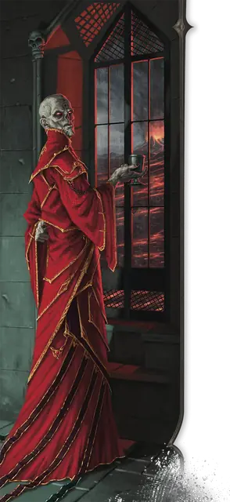

Сзасс Тэм
Szass Tam
Средняя Нежить (Волшебник), Принципиальная Злая, именной НИП

Класс Защиты 20 Инициатива +16 (26)
Хиты 397 (53к8 + 159)
Скорость 30 футов, Полёта 30 футов
| мод | спас | ||
|---|---|---|---|
| СИЛ | 12 | +1 | +1 |
| ЛОВ | 14 | +2 | +9 |
| ТЕЛ | 16 | +3 | +10 |
| мод | спас | ||
|---|---|---|---|
| ИНТ | 23 | +6 | +13 |
| МДР | 18 | +4 | +11 |
| ХАР | 19 | +4 | +4 |
Сопротивление урону Холод, Электричество
Иммунитеты Некротический, Яд; Испуганный, Истощение, Отравленный, Очарованный, Парализованный
Чувства пассивное Восприятие 21, Истинное зрение 120 футов
Языки Все
Опасность 23 (50 000 опыта; БВ +7)
Особенности
Легендарное сопротивление (4/день, или 5/день в Логове). Если Сзасс Тэм проваливает спасбросок, он вместо этого может в нём преуспеть.
Филактерия. Спустя 1к10 дней после уничтожения Сзасс Тэм заново возрождается со всеми Хитами, если его филактерия цела. Новое тело Сзасса Тэма появляется в незанятом пространстве в его логове.
Действия
Мультиатака. Сзасс Тэм совершает три атаки Парализующим касанием или Лучом истощения душ в любой комбинации. Он может заменить две атаки одним использованием Сотворения заклинаний (Перст смерти).
Парализующее касание. Бросок рукопашной атаки: +13, досягаемость 5 фт. Попадание: 15 (3к6 + 6) урона Холодом, и цель Парализована до начала следующего хода Сзасса Тэма.
Луч истощения душ. Бросок дальнобойной атаки: +13, дистанция 120 фт. Попадание: 25 (3к12 + 6) Некротического урона, и цель совершает с Помехой броски атаки и спасброски до конца своего следующего хода.
Сотворение заклинаний. Сзасс Тэм сотворяет одно из следующих заклинаний (заклинательная характеристика — Интеллект, Сл спасброска заклинаний 21):
Неограниченно: Волшебная рука, Молния, версия 8-го уровня, Обнаружение магии, Обнаружение мыслей, Огненный шар, версия 8-го уровня, Перст смерти, Фокусы
2/день каждое: Переносящая дверь, Планарный переход, Поднятие мертвеца
1/день каждое: Наблюдение, Послание, Проекция, Слово силы: смерть
Реакции
Защитная магия. Сзасс Тэм сотворяет Контрзаклинание или Щит в ответ на условие этого заклинания (заклинательная характеристика — та же, что для Сотворения заклинаний).
Легендарные действия
У этого существа есть 3 использования Легендарных действий (или 4 использования в его Логове); оно может немедленно после окончания хода другого существа потратить одно использование, чтобы совершить одно из следующих действий. Существо восполняет все потраченные использования в начале каждого своего хода.
Иссушающая магия. Сзасс Тэм сотворяет Рассеивание магии или Усыхание (заклинательная характеристика — та же, что для Сотворения заклинаний).
Смертельный телепорт. Сзасс Тэм телепортируется в видимое им в пределах 60 футов незанятое пространство, и каждое существо в пределах 10 футов от покинутого им пространства получает 13 (3к8) Некротического урона.
Разрушение жизни. Спасбросок Телосложения: Сл 21, каждое существо, кроме Нежити, в 20-футовой Эманации, исходящей от Сзасса Тэма. Провал: 14 (4к6) Некротического урона, и максимум Хитов цели снижается на число, равное полученному урону. Успех: Только половина урона. Провал или успех: Сзасс Тэм не может совершить это действие снова до начала своего следующего хода.
Бонус мастерства +7
Сзасс Тэм
Сзасс Тэм — старый и могущественный лич, некогда бесспорный регент Тэя, вынашивающий планы вернуть контроль над страной. Несмотря на то что как зулкир некромантии и тархион Горы Тэй Сзасс Тэм по-прежнему обладает огромной властью, он верит, что судьбой ему предназначено править всем Тэем и использовать тэйцев как пушечное мясо для своих армий нежити.
История
Сзасс Тэм, красноречивый и изобретательный волшебник, поднялся в рядах Красных Волшебников и более трёх столетий назад стал зулкиром некромантии, а вскоре после этого — личем.
Регентство
Более века назад Сзасс Тэм обратился против других зулкиров и провозгласил себя правителем Тэя. Победив в последовавшей гражданской войне, он объявил себя регентом и обратил своих соперников в неживых слуг. При его правлении в Тэе господствовали некроманты, и все клялись личу в верности.
Стремление к божественности
Со временем Сзассу Тэму стало мало одного лишь Тэя. Одержимый жаждой ещё большей власти, он начал ритуал восхождения к божественности. Когда несколько десятилетий назад этот ритуал с треском провалился, гражданские волнения в Тэе побудили его восстановить совет зулкиров — с верными ему марионетками. Он отказался от титула регента, хотя в действительности новые зулкиры подчинялись ему. Эти зулкиры занимались нюансами правления, не мешая личу искать новые пути достижения божественности.
Пока Сзасс Тэм оставался поглощён поисками иного способа достичь божественности, новые соперники методично свергали его зулкиров-подхалимов. Внезапно он вновь оказался в совете зулкиров с Красными Волшебниками, которые считали себя равными ему и отказывались склоняться перед ним как перед правителем страны.
Возвращающийся тиран
Хотя Сзасс Тэм по-прежнему стремится к божественности, он не может смириться с потерей политической власти в пользу соперников, которых считает ниже себя. После многих лет интриг он вновь готовится подчинить Тэй с помощью нежити, а затем сокрушить зулкиров, выступающих против него. В случае успеха он вернёт Тэю облик земли, где господствует нежить, какой она была при его правлении.
Личность
В своих многочисленных замыслах, некоторые из которых растягиваются на целые жизни, Сзасс Тэм мыслит вдолгую. При необходимости он быстро переходит к запасным планам.
Хотя ему нравится внушать страх своим тэйским подданным, он также пользуется дипломатией, чтобы поддерживать союз с иноземцами, и искусно выводит врагов из равновесия. Те, кто переходит дорогу Сзассу Тэму, могут вызвать один из его легендарных приступов ярости — или же получить одобрительный кивок, как если бы он оценил ловкий ход в стратегической игре.